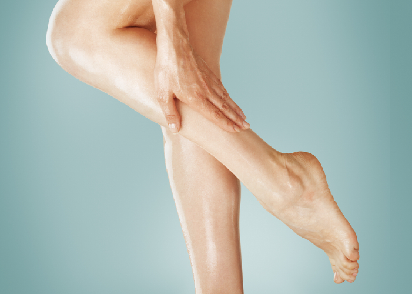

Blog / Avoiding varicose veins
Avoiding varicose veins
Avoiding varicose veins
Per one man with varicose veins, there are four women with this diagnosis. And there are many reasons for this.
The first is hormonal. Fluctuations of reproductive hormones during the menstrual cycle weaken the venous wall and it becomes more susceptible to expansion and formation of varicose veins. The same action has hormonal contraceptives. Therefore it is advisable to consult a phlebologist before taking them. Across pregnancy hormonal changes also play a crucial role in the development of varicose veins.
The second reason is a predisposition to varicose veins due to congenital weakness of the venous wall. More often it is transmitted not in the male line but in female - along with the reproductive X-chromosome.
Shoes with high heels, tight and skin-tight clothing emphasizing body shapes can also prevent the flow of blood through the veins, especially if the stomach is tight laced.
To assess your predisposition to varicose veins is very simple: if your mother or grandmother had varicose veins then the risk of developing is increased by at least 25%.
In the risk zone and women with long, slim, like models legs and those who have excess weight and envy them. How to explain this contradiction? The pressure in the veins is the higher, the longer the legs and the more fat deposits in the abdomen - these factors make it difficult to drain blood through veins. The last is like wearing tight clothing and pregnancy.
If you are at risk then to avoid varicose veins you needn’t wear tight shoes and clothes and try to get rid of excess weight. It is very important to avoid long standing on your feet and not to choose professions where this is inevitable (sellers, hairdressers, cooks). It is useful to walk, ride a bicycle, swim - muscle contraction does not stagnate blood in the veins, pushes it up. Swimming and bathing in general are very useful, even if you do not swim but just stand: the pressure of the water column helps pump out stagnant blood in the veins. In the evening do foot gymnastics while lying down and sleep better by placing a pillow under your feet to make them higher.